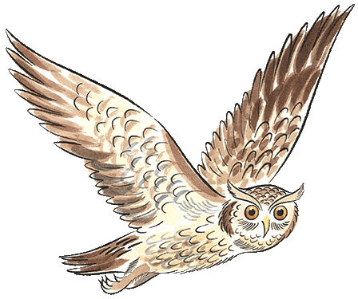
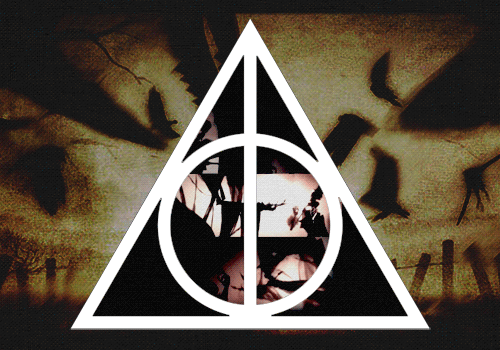

Beedle, o Bardo, as Relíquias da Morte teriam sido um presente da Morte para três irmãos bruxos, por sua perícia em magia. Duas dessas maravilhas fariam seu possuidor aparentemente o mais poderoso bruxo do mundo, tanto por seu apelo combativo ou por sua habilidade de reverter a morte de alguém; a capa, no entanto, quase sempre é desprezada por sua aparente inutilidade.



Antíoco Peverell era um bruxo combativo e com grande desejo de ser tornar um o melhor duelista. Em razão disso, ele foi o primeiro dono da Varinha das Varinhas, uma das Relíquias da Morte. Conta-se que ele e seus dois irmãos mais novos, Cadmo e Ignoto, desafiaram a Morte e em troca receberam poderosos presentes. Ao se separar dos irmãos, Antíoco saiu mundo afora para provar o poder de sua perfeita relíquia. Depois de uma semana ou mais de viagem ele chegara a uma aldeia distante, e logo procurou um colega bruxo para fazer um acerto de contas. O duelo não poderia ter sido mais previsível: o inimigo caíra morto. Saindo do acontecido, Antíoco se dirigiu á uma estalagem. Ele já estava tão cheio de si que não poupava elogios em altas vozes sobre a sua arma invencível. A varinha de madeira de sabugueiro lhe garantiu certos momentos de glória, mas ao fim acabou morto pela cobiça dos que viam sua prepotência ao exibir a "Varinha da Morte".